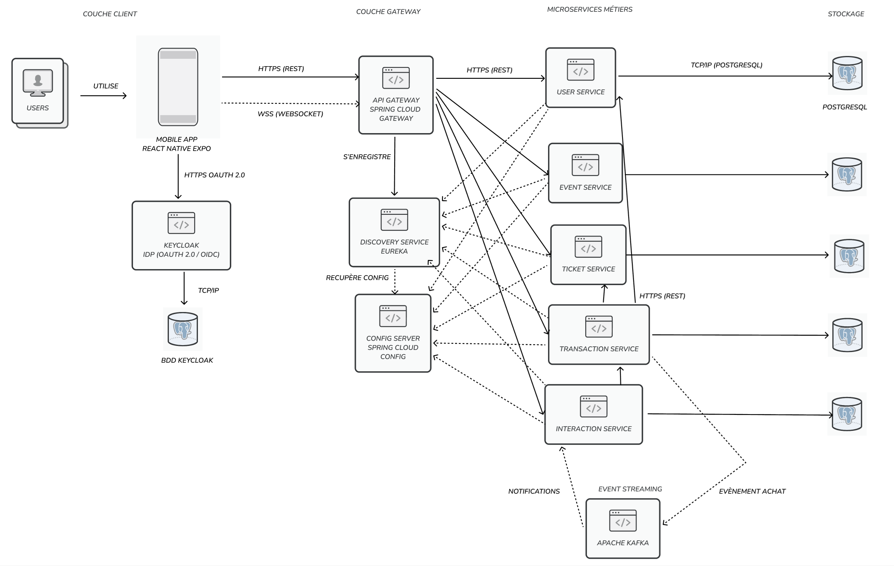
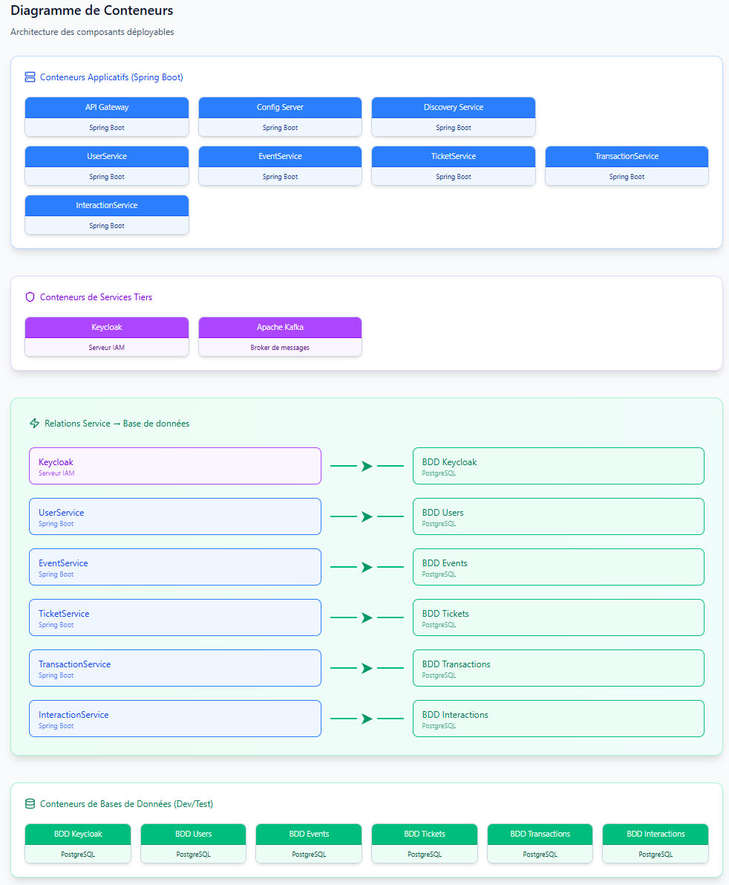
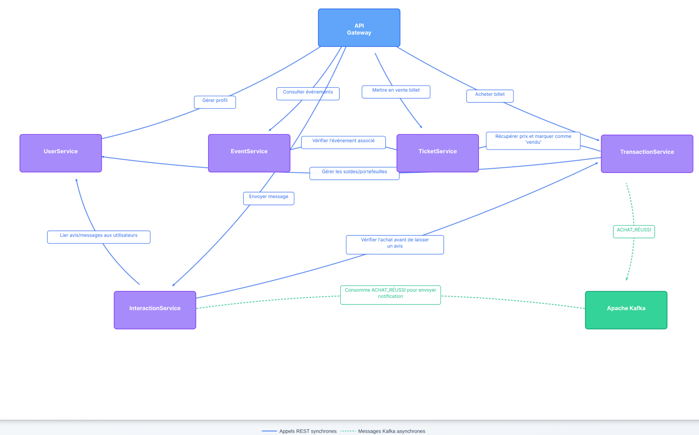

// projet académique · oct—nov 2025 · équipe de 2
Eventy.
Plateforme de billetterie événementielle sécurisée — architecture microservices Java/Spring Boot avec Kafka, Keycloak et React Native.
// Architecture
Eventy est une plateforme de billetterie événementielle (concerts, festivals, sport) permettant l'achat et la revente de billets en toute sécurité. L'architecture repose sur 7 microservices Java/Spring Boot découplés, communiquant via OpenFeign (synchrone) et Apache Kafka (asynchrone), avec Keycloak pour l'authentification OIDC.
Le client mobile (React Native + Expo) ne communique qu'avec l'API Gateway, qui route dynamiquement les requêtes vers les microservices via Eureka. Chaque service possède sa propre base PostgreSQL, versionnée par Flyway.
flowchart LR
RN["React Native\n(Expo SDK 52)\nTypeScript · NativeWind\nStripe · Keycloak Auth"] -->|HTTPS| GW
GW["API Gateway :8080\nSpring Cloud Gateway\nRoutage par path + lb://\nRate limiting, CORS"] -->|découverte| EU
EU["Eureka :8761\nService Discovery\nHeartbeats, Dashboard"]
GW --> Users["Users :8083"]
GW --> Events["Events :8082"]
GW --> Tickets["Tickets :8084"]
GW --> Txn["Transactions :8085"]
GW --> Inter["Interactions :8086"]
GW --> KC["Keycloak :8080\nOIDC IdP"]
Users -.->|Kafka| K["Apache Kafka\nPaymentValidatedEvent\nTransactionRefundedEvent"]
Tickets -.->|Kafka| K
Txn -.->|Kafka| K
// Diagramme d'architecture

Architecture générale — gateway, services, Kafka, Keycloak
// Vue conteneurs Docker

Déploiement Docker Compose — réseau mapnet, 1 DB par service
// Dépendances entre microservices

Appels synchrones (Feign) et événements asynchrones (Kafka)
// Flux transactionnel · Kafka
Le cœur de la plateforme : un achat de billet déclenche un flux asynchrone robuste via Kafka, garantissant la cohérence finale entre les services même en cas de panne temporaire.
sequenceDiagram
participant U as Utilisateur
participant T as Transactions
participant S as Stripe
participant K as Kafka
participant Ti as Tickets
participant Us as Users
U->>T: Achat billet
T->>S: Paiement CB
S-->>T: Webhook (paiement OK)
T->>K: PaymentValidatedEvent
K->>Ti: Consomme → billet = SOLD
K->>Us: Consomme → crédit wallet vendeur
Note over T,Us: Résilience : Kafka retient l'événement si un service est hors ligne
// Échec paiement
Libération immédiate du lock sur le billet via appel synchrone Feign. Le billet redevient achetable en <100ms.
// Remboursement admin
Déclenche un flux Kafka inverse TransactionRefundedEvent. Débit automatique du vendeur pour maintenir l'équilibre comptable.
// Sécurité · Keycloak
L'authentification est entièrement déléguée à Keycloak (Identity Provider OIDC).
Le frontend mobile utilise Expo Auth Session pour le flow OAuth2, et stocke
le JWT via Secure Store. Côté backend, chaque microservice agit comme
Resource Server et valide le JWT (signature + expiration) via Spring Security.
flowchart LR
RN["React Native\n(Expo Auth)"] -->|OAuth2| KC["Keycloak\n(OIDC IdP)"]
KC -->|JWT + Refresh| RN
RN -->|Authorization: Bearer JWT| MS["Microservices\n(Resource Server)\n@PreAuthorize hasRole\nRBAC : admin, user"]
// Stack technique
// Backend
Java 21, Spring Boot 3.x, Spring Security (Resource Server), Spring Cloud Gateway, OpenFeign, Flyway, Maven
// Data & Comms
PostgreSQL (1 DB par service), Apache Kafka, Keycloak (OIDC IdP), Netflix Eureka
// Frontend & DevOps
React Native (Expo SDK 52), TypeScript, NativeWind, Stripe, Docker Compose, Dokku, GitHub Actions
// Points techniques clés
// Routage dynamique
La gateway découvre les services par leur nom logique via Eureka. Aucune adresse IP en dur, load balancing client-side avec lb://.
// Kafka event-driven
Découplage asynchrone : PaymentValidatedEvent et TransactionRefundedEvent garantissent la cohérence finale sans blocage.
// Security RBAC
JWT validé par chaque microservice via Spring Security. Routes sécurisées avec @PreAuthorize, rôles admin/user extraits du token.
// DB per service
1 PostgreSQL par microservice, versionnée par Flyway. Isolation totale des données, conformément au pattern microservices.